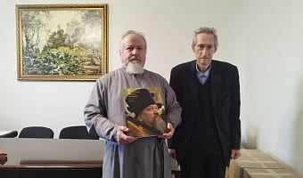
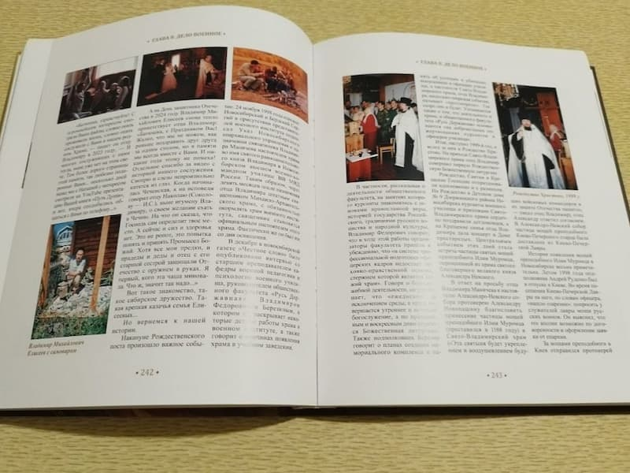
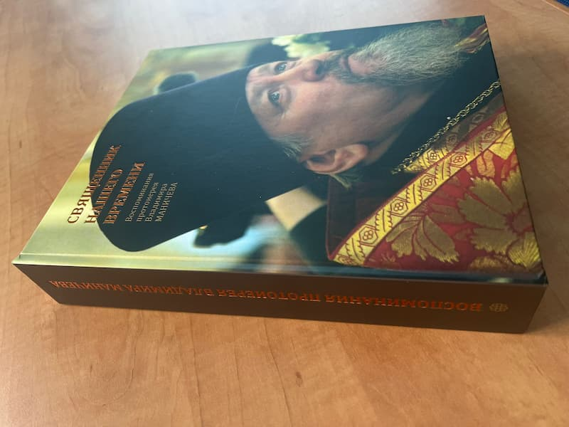
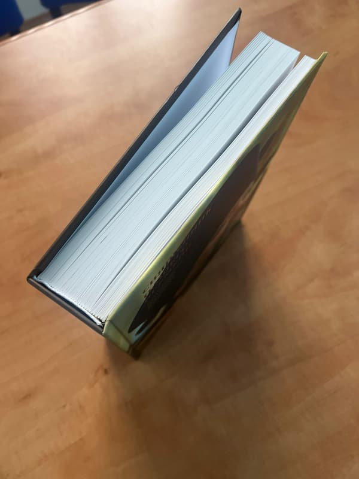

Вышла в свет книга о духовном пути протоиерея Владимира Маничева

14 июля протоиерей Владимир Маничев, ключарь Свято-Симеоновского кафедрального собора Челябинска, отмечает юбилей священнической хиротонии. Книга воспоминаний «Священник нашего времени» вышла как раз ко дню 40-летия пастырского служения отца Владимира.

Автор книги Игорь Степанов рассказал историю жизненного пути протоиерея Владимира Маничева, действии Божьего Промысла в судьбе человека и поиске духовного смысла. Особую ценность книге придает описание священнического опыта служения в трех епархиях – Челябинской, Новосибирской и Владикавказской.

Отец Владимир делится также воспоминаниями о времени его служения келейником у каслинского старца архимандрита Серафима Урбановского.

Технические характеристики издания:
- Формат: 235×284 мм
- Объем: 504 страницы + обложка
- Тираж: ограниченный

Стоит отметить, что создание книги в таком формате требует высокого уровня полиграфического мастерства, и далеко не каждая типография способна обеспечить подобное качество исполнения. Издание осуществлено в типографии «Лазурь» и уже доступно для читателей в библиотеке Свято-Симеоновского кафедрального собора.